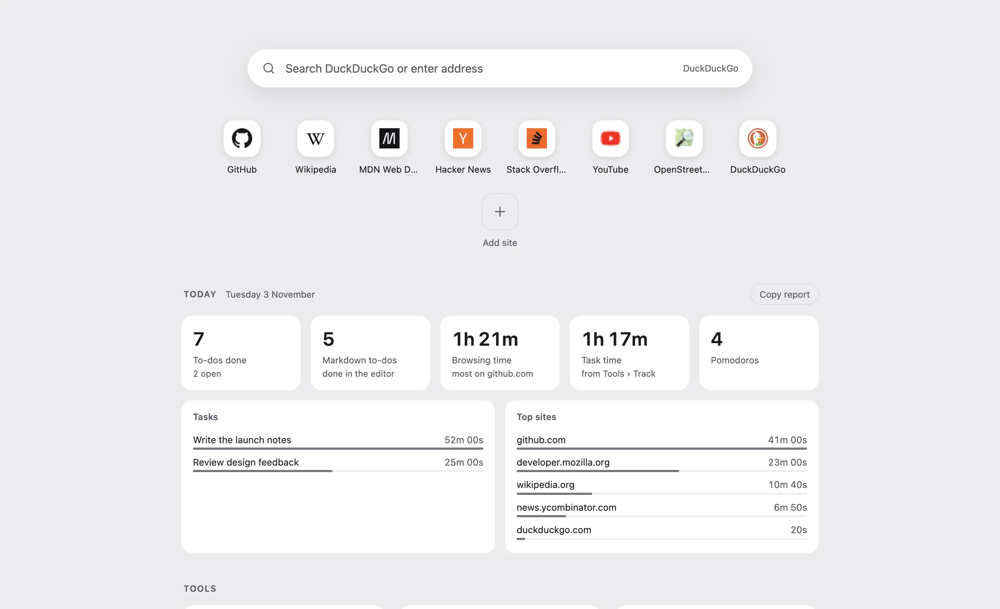
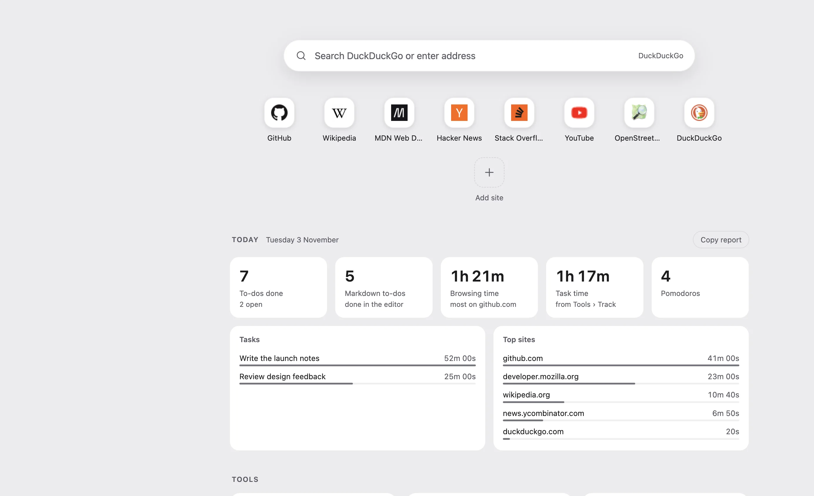
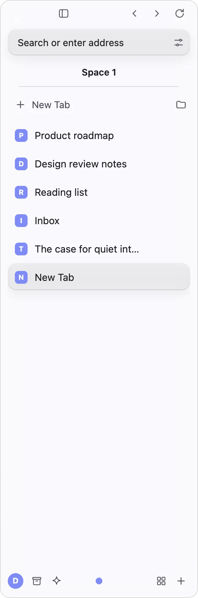
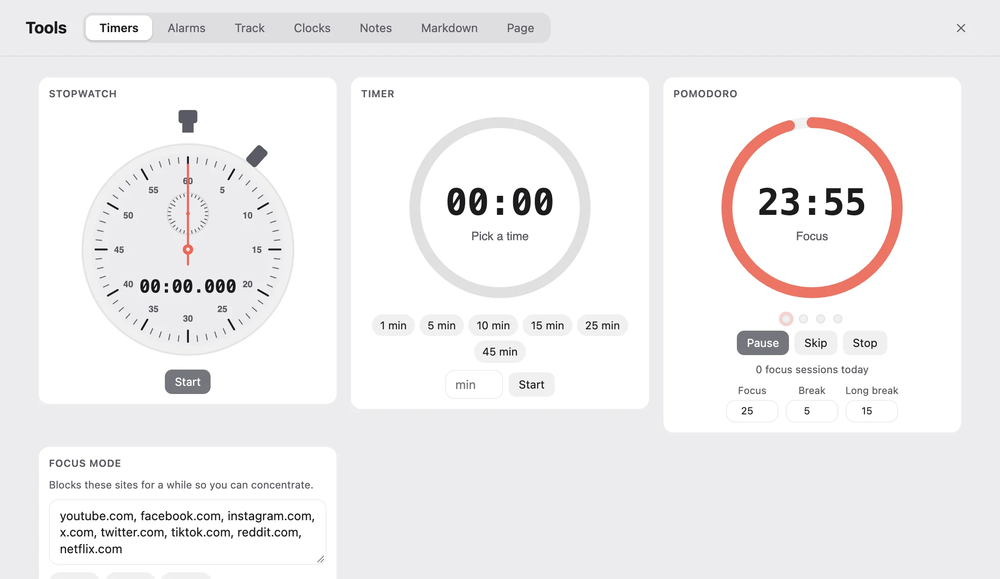
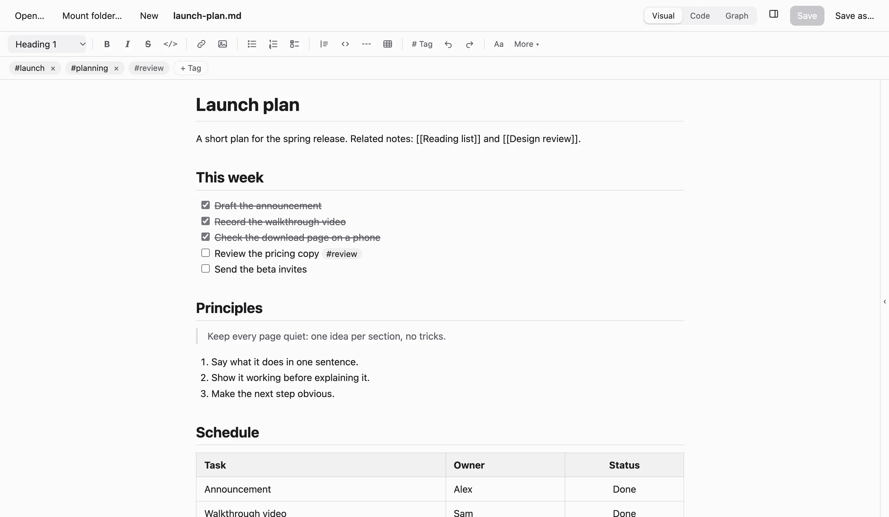

Alcove · a browser for Mac and Windows · v0.1
A calmer browser.
Tabs float in a sidebar. The page gets the whole window. Timers, notes and a Markdown editor are already inside.
The window opens: the page gets the whole window



Tabs on the side.The page comes first.
Scroll to open the window.
02 · Command bar
One bar for everything.
Search tabs and history, run any command, do the maths, convert units. Press ⌘ K anywhere on this page. It is not a mockup: type into it.
Arrow keys and Enter, or click a result.
03 · Built in
The tools you would install anyway.


.md files on your own disk. Folders mount like vaults, and ticked to-dos count toward your day.04 · All features
109 features, listed.
No add-ons. Search the list, or pick a group.
Showing all 109
- 001
Bezel-less window
No toolbar and no title bar. The page fills the window, and the window buttons appear when you hover the corner.
- 002
Floating sidebar
Your tabs sit in a sidebar that floats over the page and slides away when you do not need it.
- 003
Show or hide in one move
Toggle the sidebar with a button, a shortcut, or by touching the edge of the screen.
- 004
Docked mode
Prefer a fixed sidebar beside the page? Switch from Overlay to Docked in Settings.
- 005
Spaces
Keep separate sets of tabs for work, home or a project, each with a name and an icon.
- 006
Pinned tabs
Pin the sites you always need so they are one click away.
- 007
Tab groups
Collect related tabs into groups to keep the sidebar tidy.
- 008
Tidy tabs
Group tabs by site, close duplicates, close the others, or close everything below.
- 009
Recently closed
Reopen a closed tab with the usual shortcut, or pick it from the command bar.
- 010
Split view
Show two pages side by side with a divider you can drag.
- 011
Peek
Preview a link in a floating window, then promote it to a tab or close it.
- 012
Link routing
Open a link here, in a new tab, in the background, in Peek or in split view.
- 013
Picture in Picture
Float a video above your other windows and keep browsing.
- 014
Mute controls
Mute one tab or all tabs, with a sound indicator on the tabs that are playing.
- 015
Find in page
Search the text of the page with the standard shortcut.
- 016
Zoom
Zoom with the keyboard or by pinching, and choose the default zoom level for every page.
- 017
Swipe between pages
Swipe left or right with two fingers to go back or forward; an arrow shows when letting go will move. On a touch screen, swipe in from the edge.
- 018
Mouse back and forward buttons
The side buttons on your mouse go back and forward.
- 019
Force dark mode
Turn any website dark. Alcove remembers the sites you chose.
- 020
Bookmarks, history and downloads
A library for each of them, one shortcut away.
- 021
Crash recovery
A crashed tab can be reloaded without touching your other tabs.
- 022
A cat for when you are offline
No internet? A tabby naps in an alcove. Pet it, drop some yarn and watch it play. The page reloads by itself when you are back online.
- 023
Pick up where you left off
Restore your tabs at start-up, or open a new tab or a page you choose.
- 024
One bar for everything
Press Cmd or Ctrl+K to search tabs, history, bookmarks, commands and the web from one box.
- 025
Search inside open pages
Find text that appears inside your open tabs, not just their titles.
- 026
Close to 60 commands
Every feature is a command. Type a few letters and press Enter.
- 027
Calculator
Type 12*(3+4) and press Enter to copy the answer. Handles + - * / % ^ and brackets.
- 028
Unit converter
Try 5 mi to km, 72 f to c or 2 gb to mb. Length, weight, volume, data and temperature.
- 029
Currency converter
Type 100 usd to eur for a conversion at today's exchange rate.
- 030
Site shortcuts
yt lofi, gh alcove or w lisbon search YouTube, GitHub or Wikipedia straight from the bar.
- 031
Your search engine
DuckDuckGo, Google, Bing, Brave Search, Ecosia, Startpage, Perplexity, or your own URL.
- 032
Jump by name
Switch to any tab, space or profile by typing part of its name.
- 033
Split by name
Type split mail to show another tab beside the one you are on.
- 034
Move tabs
Type move tab to work to send the current tab to another space.
- 035
Amazon product lookup
Paste an ASIN into the bar to open that product page.
- 036
Keyboard first
Shortcuts for the common commands are shown right in the results.
- 037
Built-in ad and tracker blocker
Filter lists run inside the browser, with no extension to install.
- 038
Shield with a blocked counter
See how many requests were blocked on the page you are on.
- 039
Per-site control
Allow ads on a site you want to support, and only on that site.
- 040
YouTube ad skipping
Skips video ads automatically, without the black waiting screen.
- 041
SponsorBlock
Skips sponsor segments in YouTube videos. Switch it on or off any time.
- 042
Do Not Track
Sent by default on every request.
- 043
HTTPS-only mode
An optional switch that upgrades plain http addresses to https, except local ones.
- 044
Permissions ask first
Camera, microphone, location and notifications ask each time, and Block is the default answer.
- 045
Site permission manager
Review what each site may do, and reset it in one click.
- 046
Pop-up protection
Pop-ups open only when they come from something you clicked.
- 047
Clear cookies and cache
Wipe them whenever you choose, from Settings.
- 048
Private sessions
Press Cmd or Ctrl+Shift+N for a throwaway session. Cookies, history, tabs and notes are not saved, and are wiped when you leave. Extensions are off in it.
- 049
Vetted extensions
Alcove checks the package signature and shows an extension's permissions before it installs.
- 050
Sandboxed websites
Sites run sandboxed and never get access to Alcove's own pages or commands.
- 051
No account, no telemetry
Nothing to sign up for, and nothing is sent anywhere about how you use it.
- 052
Open source
MIT licensed. Read every line, build it yourself, or send a fix.
- 053
Stopwatch
Start, stop and record laps.
- 054
Timer
One-tap presets from 1 to 45 minutes, or any number of minutes you type. Whatever is running stays in view, with pause and stop, on every Tools tab.
- 055
Pomodoro
Focus and break lengths you choose, with a count of the sessions you finished today.
- 056
Alarms
Once, daily, weekly on chosen days, or monthly. Snooze them, and mute the sound if you like.
- 057
Focus mode
Blocks a list of distracting sites for 25, 50 or 90 minutes. Edit the list to suit you.
- 058
Time tracking
See how long you spent on each site, in each space and on each task.
- 059
Task timer
Name a task, start the clock, and it lands in today's report.
- 060
World clock
Cities and time zones side by side, with day offsets and working-hours hints.
- 061
Daily report
The start page shows your day live: to-dos, Markdown to-dos, browsing time, task time and Pomodoros.
- 062
Copy report
One click copies today's report as text for a stand-up or a journal.
- 063
Notes
A scratchpad for each space, kept on your device.
- 064
To-do lists
One list per space. Ticked items count toward your day.
- 065
Notifications
Timers and alarms notify you even when Alcove is in the background.
- 066
Start page shortcuts
Pin up to 24 of your favourite sites to the start page.
- 067
Start from the start page
Begin a timer or a Pomodoro straight from a new tab.
- 068
Visual editor
Write formatted text and Alcove saves it as plain Markdown.
- 069
Code and split views
Edit the raw Markdown, with a live preview beside it.
- 070
Graph view
See how your notes link to each other.
- 071
Folders like vaults
Mount several folders at once and search across all of them.
- 072
Tags
Front-matter tags and inline #tags, with a tag bar and one-click tag search.
- 073
Tables, to-dos, code and quotes
A formatting toolbar plus typing shortcuts such as # for headings and [] for a to-do.
- 074
Never lose a word
Unsaved edits are kept as drafts, and Alcove asks before you quit with an unsaved note.
- 075
Plain files
Notes are ordinary .md files on your disk. Open one from anywhere and it opens in the editor.
- 076
Counts toward your day
Ticking a Markdown to-do shows up in the daily report on the start page.
- 077
Recent files and folders
The Markdown tab in Tools lists the notes and folders you opened last.
- 078
Screenshot a region
Drag over the part of the page you want.
- 079
Option-drag to capture
Hold Option (Alt on Windows) and drag across a page to screenshot just that area. On a touch screen, swipe down with three fingers.
- 080
Screenshot the visible area
Capture exactly what is on screen.
- 081
Screenshot the full page
Capture a long page in one image.
- 082
Screenshot preview
Save, save as, copy to the clipboard or discard, right after you capture.
- 083
Download YouTube videos
Set up the optional video tools once, then save a video with a shortcut.
- 084
Save and copy images
Right-click any image to save it, copy it, or copy its address.
- 085
Download all images
Grab every image on a page in one go.
- 086
Auto-refresh
Reload a tab every 30 seconds, 1, 5, 15 or 30 minutes. Handy for dashboards.
- 087
Colour picker
Pick any colour on the page and copy its hex code.
- 088
QR code for this page
Show a QR code to open the page on your phone.
- 089
Copy link without tracking
Strips utm and similar tracking parameters before you share.
- 090
Copy as Markdown link
Copies the page as a ready-made Markdown link.
- 091
Translate page
Opens the page in Google Translate.
- 092
Archived copy
Opens the Wayback Machine copy of the page.
- 093
Amazon helpers
Copy a product's ASIN, or open it in Keepa for price history.
- 094
Add to start page
Pin the site you are on as a shortcut.
- 095
View page source
Available on any website, from the right-click menu.
- 096
Light, dark or system
Follow your computer's setting, or pick one.
- 097
Accent colour
Choose the colour used for highlights across the app.
- 098
Frosted glass sidebar
Adjust blur, frost and shine, or switch to clear glass. The tint adapts to the page behind it.
- 099
Text size and compact mode
Small, default or large text, and a tighter layout when you want more on screen.
- 100
Choose your new tab
The start page, your search engine, a blank page or any address you like.
- 101
Chrome Web Store extensions
Use the Add to Alcove button on a Web Store page. Alcove supports part of Chrome's extension APIs, so not every extension works.
- 102
Import from other browsers
Bring your data from Chrome, Edge, Brave, Arc or Vivaldi.
- 103
Profiles
Separate browsing data for work and personal use.
- 104
Default browser
Set Alcove as your default browser from Settings.
- 105
Downloads your way
Pick a folder, or be asked where to save each file.
- 106
Spell check
On by default, and easy to switch off.
- 107
Update check
Press Check for updates, or switch on a quiet daily check at start-up.
- 108
Mac and Windows
Apple silicon and Intel Macs, and 64-bit Windows 10 and 11.
- 109
Chromium engine
The same engine as Chrome, so sites behave the way you expect.
Nothing matches that. Try a shorter word.
05 · Privacy
Yours, and only yours.
No account, no analytics, no telemetry. Your history, bookmarks, tabs, notes, to-dos, timers and time tracking are stored on your device only.
- Accounts needed
- 0
- Telemetry or analytics
- 0
- License
- MIT
- Ads and trackers are blocked in the browser itself, and a shield shows what was blocked on each page.
- Do Not Track is on by default, and HTTPS-only mode is one switch away.
- Camera, microphone, location and notifications ask first, and Block is the default answer.
- Websites run sandboxed and never get access to Alcove's own pages or commands.
- The code is open, so anyone can check all of this.
| Service | Why, and when |
|---|---|
| Ad filter lists (GitHub) | Ad blocking. Fetched at start-up when your saved copy is over a day old; never while blocking is off. |
| sponsor.ajay.app | SponsorBlock on YouTube. Sends a short hash prefix of the video id, not the id. |
| Chrome Web Store | Only when you install an extension. |
| GitHub releases | Only the video tools (yt-dlp, ffmpeg) you choose to set up. |
| Exchange rates | Only when you type a currency conversion in the command bar. |
| api.github.com | Check for updates: when you press the button, or daily at start-up if you switch that on (off by default). |
| Sites you use | Each site's favicon, for the icons in the sidebar and on the start page. |
The full, current list is in the README.
06 · Download
Get Alcove.
Free and open source under the MIT license. Early release.
Alcove is a desktop browser. Open this page on your Mac or Windows computer to download it.
-
Download for Windows↓ Recommended for your system
Windows
64-bit installer for Windows 10 and 11.
-
Download for Apple silicon↓ Recommended for your system
Mac, Apple silicon
For Macs with an M1 chip or later.
-
Download for Intel↓ Recommended for your system
Mac, Intel
For Macs with an Intel processor.
Not sure which Mac you have? Open the Apple menu, choose About This Mac, and look at Chip (Apple silicon) or Processor (Intel).
Good to know
The installers are not code signed yet. In Chrome, open the downloads list, click the three dots next to the file, choose Keep, then Keep anyway. When SmartScreen appears, choose More info, then Run anyway.
Open System Settings › Privacy & Security, scroll to the message about Alcove, and choose Open Anyway.
Open Settings › About › Check for updates in Alcove, or run Check for Updates from the command bar. When a newer release exists it opens the download page, and you install over the old version. Your tabs, settings and notes are kept.
Yes. Alcove is free and open source under the MIT license, with no accounts, subscriptions or ads in the app.
Electron and Chromium, the same engine as Chrome, so sites behave the way you expect. Alcove's own pages are plain HTML, CSS and JavaScript, with no framework.
Many do, but not all. Alcove supports only part of Chrome's extension APIs, so some extensions will not work. To add one, open its Chrome Web Store page and use Add to Alcove. Alcove checks the package signature and shows what the extension can access before it installs. Installed extensions are not updated automatically yet.
Alcove can import from Chrome, Edge, Brave, Arc and Vivaldi. Run Import from Browser from the command bar or the File menu.
Code signing certificates cost money, and this is a young open-source project. We plan to apply for free code signing for open-source projects (the SignPath Foundation). Until then your computer will warn you once.
No. It only keeps this device from remembering the session: cookies, history, tabs and notes are wiped when you leave. The sites you visit, your network and your internet provider can still see you, and files you download stay on disk.
07 · Support and contact
Write to us.
Bug reports, feature ideas and questions are all welcome.
Please include your Alcove version (Settings › About) and your system, such as Windows 11 or macOS on Apple silicon.
- Bugs and feature ideas: open an issue on GitHub.
- A security problem: report it privately through the repository's Security tab (Report a vulnerability) or by email, not in a public issue.